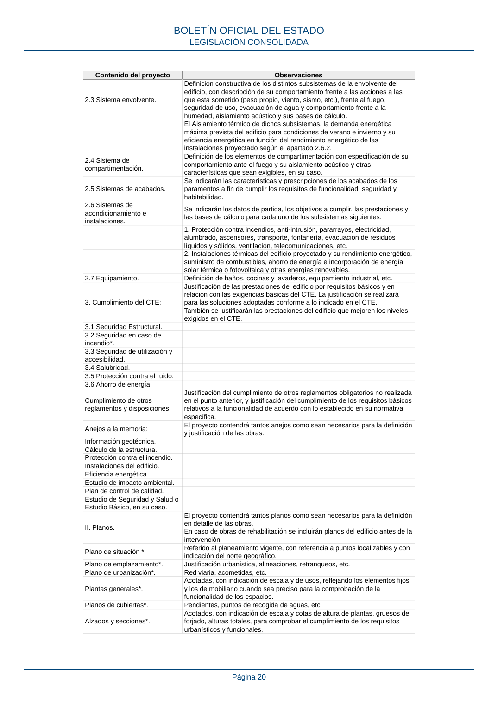

Real Decreto 314/2006: aprobación y Parte I del CTE · edición 2022-06-15 · capa oficial
Documento RD-314-2006-oficial · SHA-256 del PDF 298090e145f5558aceae49702b2ce132fe8fe8671bd87d650217c6a24bdd65ba
Página física 20 de 26.
Copia fiel del PDF fuente · Fuente oficial
Texto extraído y reorganizado: Basado en datos de la Agencia Estatal Boletín Oficial del Estado. PDF reproducido: Fuente de los datos: Agencia Estatal Boletín Oficial del Estado.
Formato: Texto de la página (Markdown)
Contenido del proyecto Observaciones 2.3 Sistema envolvente. Definición constructiva de los distintos subsistemas de la envolvente del edificio, con descripción de su comportamiento frente a las acciones a las que está sometido (peso propio, viento, sismo, etc.), frente al fuego, seguridad de uso, evacuación de agua y comportamiento frente a la humedad, aislamiento acústico y sus bases de cálculo. El Aislamiento térmico de dichos subsistemas, la demanda energética máxima prevista del edificio para condiciones de verano e invierno y su eficiencia energética en función del rendimiento energético de las instalaciones proyectado según el apartado 2.6.2. 2.4 Sistema de compartimentación. Definición de los elementos de compartimentación con especificación de su comportamiento ante el fuego y su aislamiento acústico y otras características que sean exigibles, en su caso. 2.5 Sistemas de acabados. Se indicarán las características y prescripciones de los acabados de los paramentos a fin de cumplir los requisitos de funcionalidad, seguridad y habitabilidad. 2.6 Sistemas de acondicionamiento e instalaciones. Se indicarán los datos de partida, los objetivos a cumplir, las prestaciones y las bases de cálculo para cada uno de los subsistemas siguientes: 1. Protección contra incendios, anti-intrusión, pararrayos, electricidad, alumbrado, ascensores, transporte, fontanería, evacuación de residuos líquidos y sólidos, ventilación, telecomunicaciones, etc. 2. Instalaciones térmicas del edificio proyectado y su rendimiento energético, suministro de combustibles, ahorro de energía e incorporación de energía solar térmica o fotovoltaica y otras energías renovables. 2.7 Equipamiento. Definición de baños, cocinas y lavaderos, equipamiento industrial, etc. 3. Cumplimiento del CTE: Justificación de las prestaciones del edificio por requisitos básicos y en relación con las exigencias básicas del CTE. La justificación se realizará para las soluciones adoptadas conforme a lo indicado en el CTE. También se justificarán las prestaciones del edificio que mejoren los niveles exigidos en el CTE. 3.1 Seguridad Estructural. 3.2 Seguridad en caso de incendio*. 3.3 Seguridad de utilización y accesibilidad. 3.4 Salubridad. 3.5 Protección contra el ruido. 3.6 Ahorro de energía. Cumplimiento de otros reglamentos y disposiciones. Justificación del cumplimiento de otros reglamentos obligatorios no realizada en el punto anterior, y justificación del cumplimiento de los requisitos básicos relativos a la funcionalidad de acuerdo con lo establecido en su normativa específica. Anejos a la memoria: El proyecto contendrá tantos anejos como sean necesarios para la definición y justificación de las obras. Información geotécnica. Cálculo de la estructura. Protección contra el incendio. Instalaciones del edificio. Eficiencia energética. Estudio de impacto ambiental. Plan de control de calidad. Estudio de Seguridad y Salud o Estudio Básico, en su caso. II. Planos. El proyecto contendrá tantos planos como sean necesarios para la definición en detalle de las obras. En caso de obras de rehabilitación se incluirán planos del edificio antes de la intervención. Plano de situación *. Referido al planeamiento vigente, con referencia a puntos localizables y con indicación del norte geográfico. Plano de emplazamiento*. Justificación urbanística, alineaciones, retranqueos, etc. Plano de urbanización*. Red viaria, acometidas, etc. Plantas generales*. Acotadas, con indicación de escala y de usos, reflejando los elementos fijos y los de mobiliario cuando sea preciso para la comprobación de la funcionalidad de los espacios. Planos de cubiertas*. Pendientes, puntos de recogida de aguas, etc. Alzados y secciones*. Acotados, con indicación de escala y cotas de altura de plantas, gruesos de forjado, alturas totales, para comprobar el cumplimiento de los requisitos urbanísticos y funcionales. BOLETÍN OFICIAL DEL ESTADO LEGISLACIÓN CONSOLIDADA Página 20

Datos candidatos: compruebe celdas y notas en el PDF.